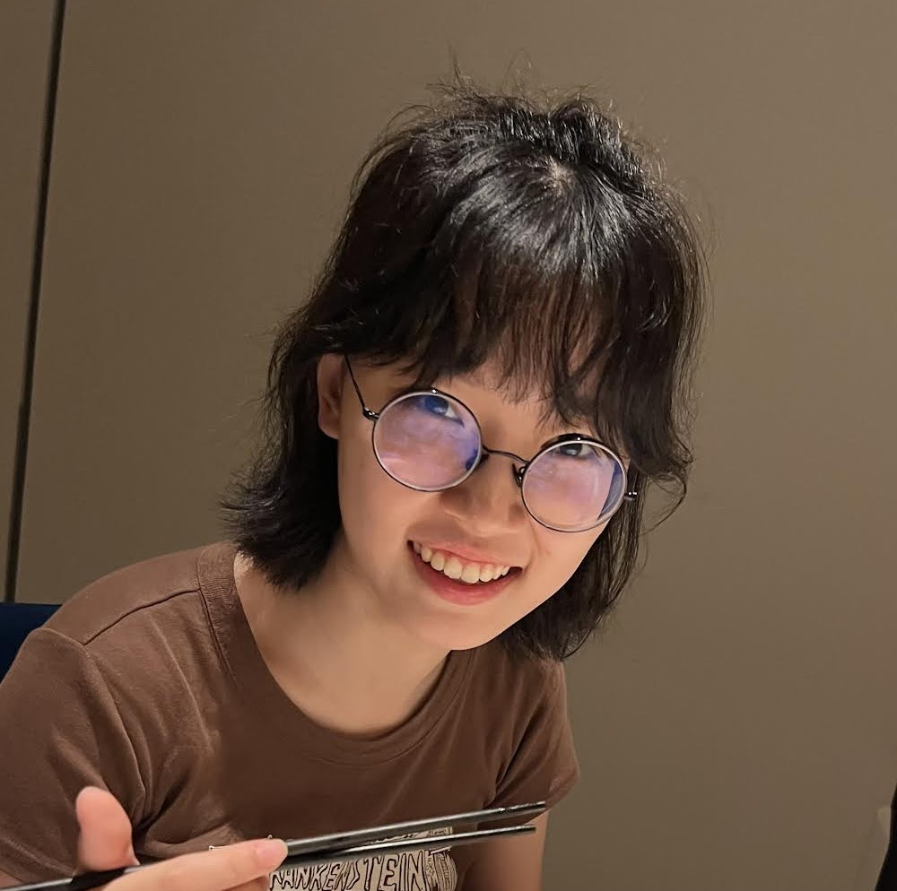
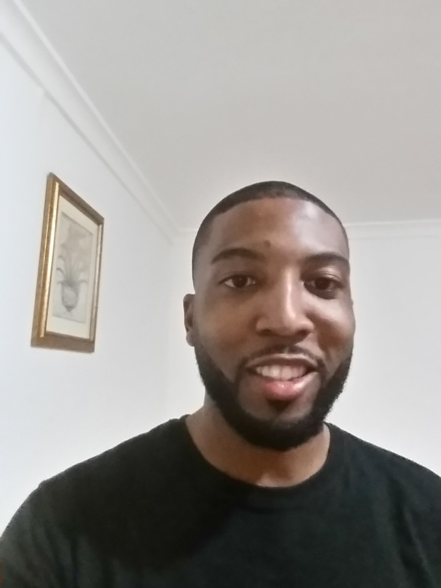
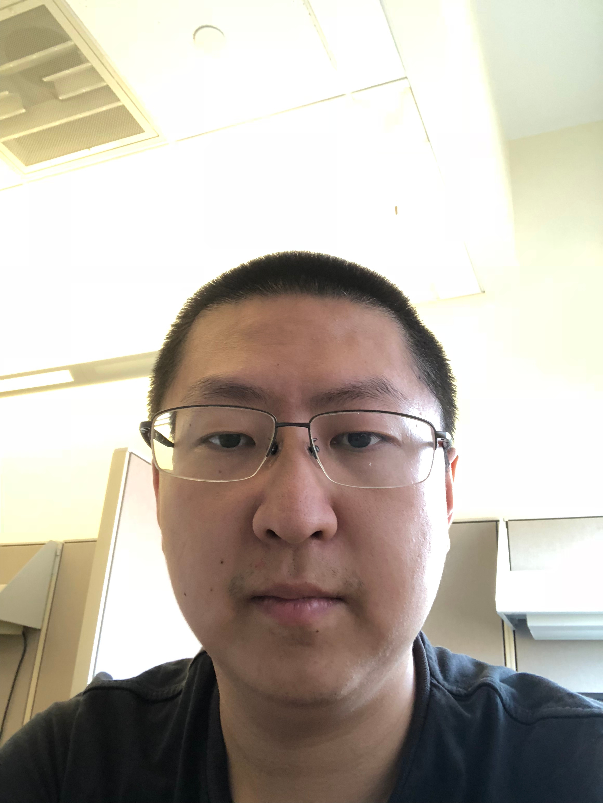
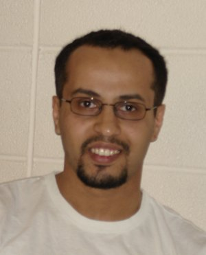
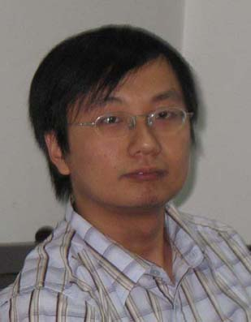
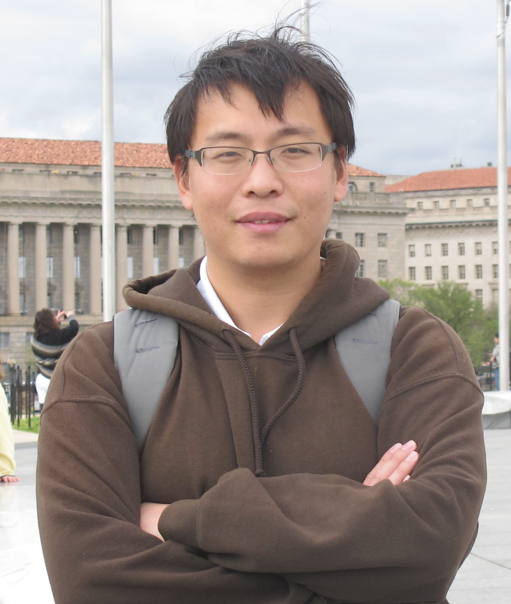
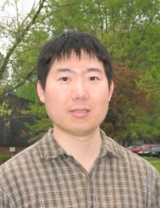

Ph.D. Students
-

Mengning Li
Ph.D. Student, 2022–current
Mengning Li joined the Ph.D. program at NCSU’s ECE department in Fall 2022. She received her Bachelor’s degree from Shanghai Jiao Tong University.
-

LoyCurtis Smith
Ph.D. Student, 2019–current
LoyCurtis Smith joined the PhD program at NCSU's ECE department in Spring 2019. He received his Master of Science from ECU in 2016 and his Bachelor of Science from UNCFSU in 2014.
-

Teng Fei
Ph.D. Student, 2019–current
Teng Fei joined the Ph.D. program at NCSU's ECE department in Spring 2019. Before that, he received his Bachelor’s degree from Harbin Institute of Technology.
-
Rui Zou, Ph.D.
Ph.D. Student, 2015–2023
Rui Zou entered the Ph.D. program in NCSU in Fall 2015. He received his master’s degree from BUPT; his Bachelor program was co-provided by BUPT and Queen Mary University of London.
-
Yali Wang, Ph.D.
Ph.D. Student, 2015–2017
She is currently with Huawei Co.
-
Jie Wang, Ph.D.
Ph.D. Student, 2014–2019
Thesis: “Modeling and Analysis of Mobile Data Dynamics in Heterogeneous Wireless Networks.” She is currently with NC State University, Raleigh, NC.
-
Sigit Pambudi, Ph.D.
Ph.D. Student, 2012–2017
Thesis: “Modeling and Evaluation of Cyber-Physical Threats in Emerging Interdependent Networks.” Currently with MicroStrategy Inc., Tysons Corner, VA.
-
Mingkui Wei, Ph.D.
Ph.D. Student, 2011–2016
Thesis: “Modeling, Evaluation and Enhancement of Threats-Induced Reliability in Cyber-Physical Systems.” Currently with Sam Houston State University, TX.
-
Yujin Li, Ph.D.
Ph.D. Student, 2009–2014
Thesis: “Mobility and Traffic Correlations in Device-to-Device (D2D) Communication Networks.” Currently with Google, Mountain View, CA.
-

Shawqi Kharbash, Ph.D.
Ph.D. Student, 2006–2013
Thesis: “Modeling and Analysis of Wireless Networking Reliability.” Currently with NC State University, Raleigh, NC.
-

Zhuo Lu, Ph.D.
Ph.D. Student, 2009–2013
Thesis: “Modeling and Evaluating the Impact of Denial-of-Service Attacks in Emerging Wireless and Mobile Applications.” Currently with University of South Florida.
-
Lei Sun, Ph.D.
Ph.D. Student, 2007–2012
Thesis: “Modeling and Analysis of Performance and Topology Limits of Cognitive Radio Networks, 2012.” Currently with Cisco, RTP, NC.
-

Xiang Lu, Ph.D.
Ph.D. Student, 2010–2012
Co-Advised with Dr. Jianfeng MaThesis: “Secure and Reliable Communication Infrastructures towards the Smart Grid.” Currently with Institute of Information Engineering (IIE), Beijing, China.
-

Yi Xu, Ph.D.
Ph.D. Student, 2005–2010,
Postdoc (2010–2012)Thesis: “Understanding the Performance and Resilience of Large-Scale Multi-Hop Wireless Networks, 2010.” Currently with Cisco, San Jose, CA.
-
Ming Zhao, Ph.D.
Ph.D. Student, 2004–2009
Thesis: “Design, Modeling, and Analysis of User Mobility and Its Impact on Multi-Hop Wireless Networks.” Currently with Cisco, RTP, NC.
-
Avesh K. Agarwal, Ph.D.
Ph.D. Student, 2003–2009
Thesis: “Performance and Protection Management in Wireless Networks.” Currently with Red Hat, Raleigh, NC.
-

Fei Xing, Ph.D.
Ph.D. Student, 2004–2008
Thesis: “Modeling, Design, and Analysis on the Resilience of Large-scale Wireless Multi-hop Networks.” Currently with Cisco, San Jose, CA.
-

Nurcan Tezcan, Ph.D.
Ph.D. Student, 2004–2008
Thesis: “Energy-Efficient and Reliable Data Transfer in Wireless Sensor Networks.” Currently with Intel, Portland, OR.
-

Xinbing Wang, Ph.D.
Ph.D. Student, 2001–2006
Co-Advised with Dr. Do Young EunThesis: “Performance Analysis of TCP over Wired and Wireless Networks.” Currently with Dept. of Electronic Engineering, Shanghai Jiao Tong University.
-
Wei Liang, Ph.D.
Ph.D. Student, 2001–2005
Thesis: “Design and Analysis of Authentication Mechanisms in Single- and Multi-Hop Wireless Networks.” Currently with Cisco, San Jose, CA.
M.S. Students
-
Lichen Fu, M.S.
MS Student, 2021–2023
Lichen Fu graduated in 2023.
-
Xiaozhou Fang, M.S.
MS Student, 2012–2014
Thesis: “Neighbor Graph Based Proactive Caching for Seamless Handover in Content-Centric Network.” Currently with NC State University.
-
Mohit Shah, M.S.
MS Student, 2012–2013
Thesis: “End to End Communication Architecture and Technology Performance Evaluation: Ethernet and WiFi for Substation Automation Networks.” Currently with NC State University.
-
Chi Yi, M.S.
MS Student, 2009–2011
Currently with Microsoft, Seattle, WA.
-
Haiyang Zheng, M.S.
MS Student, 2009–2011
Currently with Cisco, San Jose, CA.
-
Mohit Khanna, M.S.
MS Student, 2009–2010
Currently with Qualcomm, San Diego, CA.
-
Jung Kee Song, M.S.
MS Student, 2003–2005
Thesis: “Performance Evaluation of Handoff between UMTS/802.11b based on Mobile IP and SCTP.” Currently with Samsung, Seoul, Korea.
-
Heng Xia, M.S.
MS Student, 2003–2005
Thesis: “Effects of Medium Access Control on the Capacity of Mobile Ad Hoc Networks.” Currently with NCSU PhD Program.
Former Members
Luo Huan, Post-Doc 2012–2014
Yan Yu, Visiting Scholar 2016–2017
Jiexiao Yu, Visiting Scholar 2015–2016
Tan-Li Hsu, Student 2015–2016
Levi Mason, Student 2007–2008
Kaseima Frye, Student 2007–2008
Jennifer Webster, Undergraduate Research Assistant Summer 2009
Erica Young, Undergraduate Research Assistant Summer 2009
Remi Scalabrini, Undergraduate Student Summer 2004
Jorinjit S. Gill, Graduate Research Assistant Spring 2004
Dechaphol Suwisisth, Undergraduate Student Summer 2003